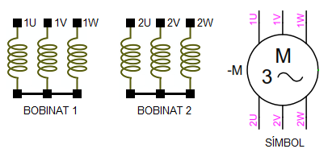
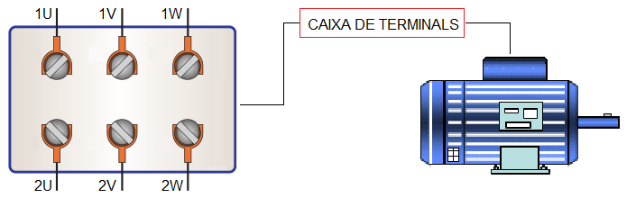
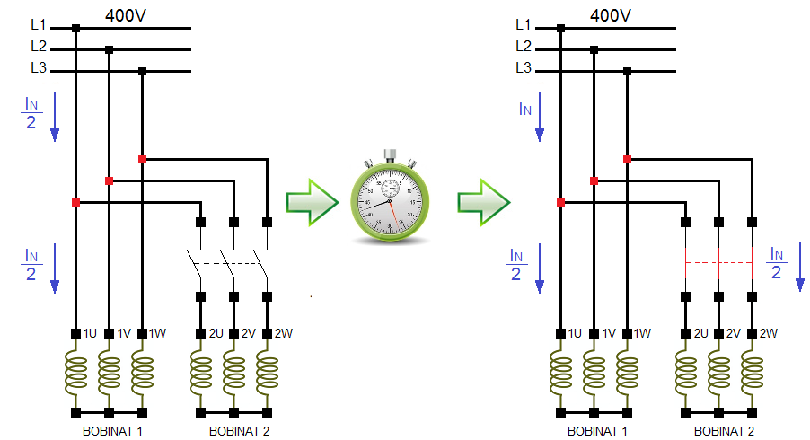
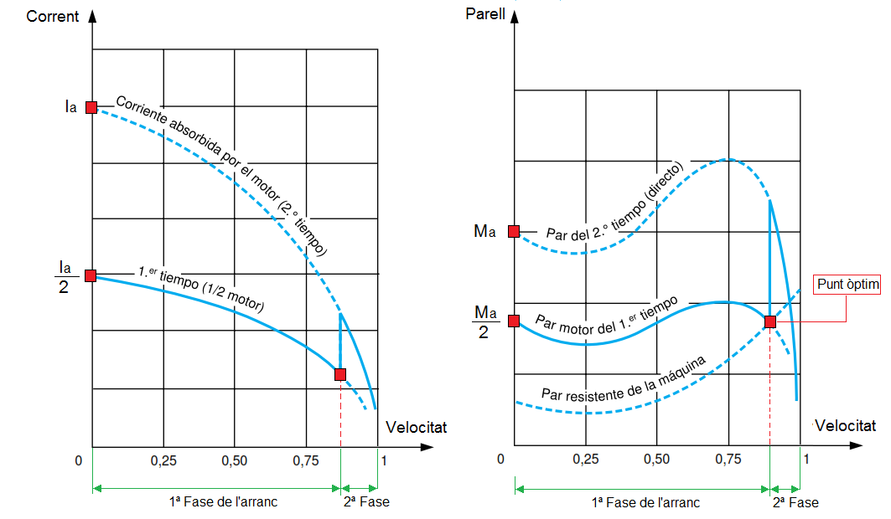

Motor de bobinats separats (Part Winding)
El motor de bobinats separats, també anomenat "part winding" és un motor d'inducció amb dos bobinats independents situats en l'estàtor. Internamen aquests dos bobinats estan connectats en estrella.

Els extrems del bobinats (1U-1V-1W, 2U-2V-2W) seran accesibles des de la caixa de terminals del motor.

Podem afirmat que un motor de bobinats separats de potència nominal P és equivalent a dos "mitjos motors" de igual potència P/2.
La filosofia d'aquest tipus de motor per reduir el pic de corrent en l'arranc consisteix en començar el procés d'arrancada amb la meitat dels bobinats.

Quan el motor aconsegueix entre el 75 i el 85% de la seva velocitat nominal, es connecta el segon bobinat. Les condicions òptimes es donarien al connectar el segon bobinat en l'instant definit pel punt, en el qual el parell motor i parell resistent es creuen. El pic de corrent en aquest moment és el mínim possible, feble i de poca durada i el parell motor augmenta, instants després, disminueix fins a arribar al punt de funcionament de la màquina.

Al arrancar amb la meitat dels bobinats, el motor desenvolupa tan sols la meitat de la potència nominal, el que divideix aproximadament per dos tant el corrent d'arrencada com el parell.
Aquest sistema, poc utilitzat a Europa, és molt freqüent en el mercat nord-americà (tensió de 230/460 V, relació igual a 2).
Llicenciat sota la Llicència Creative Commons Reconeixement CompartirIgual 4.0